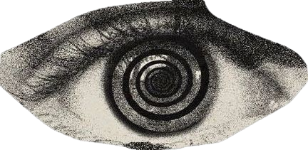
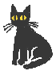

About me




Me with a
(7.12.2025)
I I am interested in classical music, painting, I play piano, I am learning to draw, and I also "study" (?) Jungian and Freudian psychoanalysis. I am interested in tea culture. Besides that I do photography, aquarium keeping and plants, and for a while I studied astronomy. I spend a lot of time in nature — in forests, by the river and in the mountains.
If I could wish for one thing, it would be that every person finds their place in the world, pauses for a moment and experiences true, deep, sacred calm — solace, emptiness, stillness, permanence, unity with the world. At least once, if only for a moment.
I have been visiting this earth since the 21st day of the twelfth, winter month of year 07 of the current century (twenty-first).